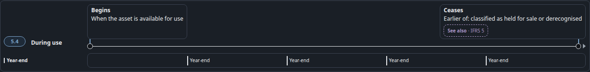
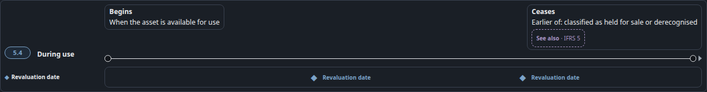

#98 punch5 — Dep ‖ Reval During-use timeline
Dep after is the signed kit25, unchanged. Reval after folds the two live ◆ onto that same axis and drops the second band. Wording unchanged.
Depreciation
BEFORE · live ch05 .lc-head — Year-end legend + 4 ticks under the axis
AFTER · signed kit25 only. No punch5 edit. Span「Depreciate over useful life」. No Year-end band.
Revaluation
BEFORE · live ch04 .lc-head — axis, then a separate ◆ band.「Revaluation date」three times.
AFTER · punch5. Same kit25. ◆ at the live 35% and 70%, on the axis.「Revaluation date」once. No .reval-date-row.